Reading Rocks!
(Natural Language Processing)
Links & Self-Guided Review
- TB Hack Day on Feb 11th! Register at https://seatrac.uw.edu/training/i4tbworkinggroup
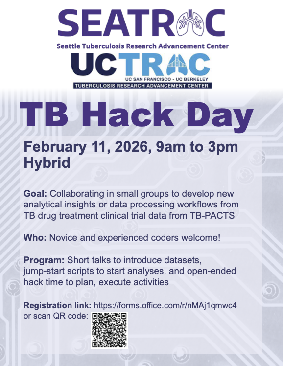
- Speech and Language Processing — Jurafsky & Martin, comprehensive NLP textbook (free online, chapters 2-6 cover this lecture)
- NLTK Book — official tutorial with exercises (chapters 1-7)
- spaCy 101 — core concepts and usage patterns
- Real Python: NLP with spaCy — hands-on tutorial
- Regex101 — interactive regex tester with explanation
- scispaCy — biomedical NLP models
Natural Language Processing
What is NLP?
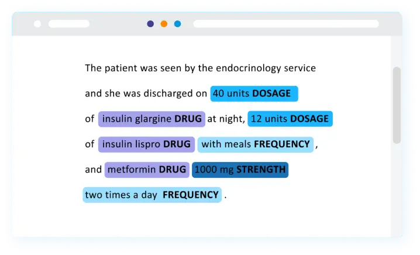
Humans communicate in natural language—English, Spanish, clinical shorthand. Computers need structure—numbers, categories, defined relationships. Natural language processing (NLP) bridges this gap, transforming free-form text into data that algorithms can analyze.
NLP powers everyday tools:
- Search engines understand queries and match relevant documents
- Translation services convert between languages
- Voice assistants interpret spoken commands
- Email filters detect spam and categorize messages
The core challenges:
- Ambiguity — “bank” means river bank or financial bank?
- Context — “not bad” means good
- Variation — “BP”, “blood pressure”, “b.p.” all mean the same thing
- Implicit knowledge — “take with food” implies meals
Why NLP for Health Data?
Electronic health records contain vast amounts of free-text data: physician notes, discharge summaries, radiology reports, pathology findings. Surveys and patient-reported outcomes add more unstructured text. NLP lets you:
- Extract diagnoses from clinical notes that weren’t coded
- Identify adverse events mentioned in free text
- Analyze sentiment (positive/negative tone) in patient feedback
- Build cohorts from text descriptions that predate structured fields
| Data Source | Example Text | What NLP Can Extract |
|---|---|---|
| Progress notes | “Patient denies chest pain, reports mild fatigue” | Symptoms (negated and affirmed) |
| Radiology reports | “No acute intracranial abnormality” | Findings, negation status |
| Discharge summaries | “Follow up with cardiology in 2 weeks” | Care instructions, timing |
| Patient surveys | “The wait time was frustrating” | Sentiment, specific complaints |
Classical vs LLM-based Approaches
Classical NLP uses explicit pipelines: tokenize text, apply rules or statistics, convert to numerical features. LLM-based NLP uses neural networks trained on massive text corpora to learn representations end-to-end.
| Aspect | Classical NLP | LLM-based |
|---|---|---|
| Text representation | Word counts, TF-IDF | Contextual embeddings |
| Pipeline | Explicit stages (tokenize → analyze → vectorize) | Often end-to-end |
| Interpretability | High—you can inspect features | Lower—embeddings are opaque |
| Computational cost | Low | High |
| Training data | Works with small labeled sets | Benefits from massive pretraining |
When to use classical NLP:
- You need interpretable features (“which words predict readmission?”)
- Computational resources are limited
- You’re building rule-based extraction
- The task is well-defined and doesn’t require deep understanding
When to use LLMs:
- The task requires understanding context and nuance
- You need text generation or summarization
- Transfer learning from general knowledge helps your domain
Most real-world clinical NLP systems combine both: classical techniques for structured extraction, LLMs for complex reasoning.
Tools: NLTK vs spaCy
Two Python libraries dominate classical NLP work.
NLTK (Natural Language Toolkit) is designed for learning and research. It offers many algorithms for each task, letting you explore different approaches. Processing is string-based—you work with lists of words and manual pipelines.
spaCy is designed for production applications. It provides one optimized algorithm per task, prioritizing speed and ease of use. Processing is object-oriented—you work with Doc, Token, and Span objects that carry rich annotations.
| Aspect | NLTK | spaCy |
|---|---|---|
| Philosophy | Educational, comprehensive | Production-ready, fast |
| Algorithm choice | Many algorithms to choose | One best algorithm per task |
| Processing style | String-based | Object-oriented (Doc, Token, Span) |
| Pipeline | Manual assembly | Integrated pipeline |
| Best for | Learning, research | Applications |
spaCy’s object model:
- Doc — a processed document containing all tokens and annotations
- Token — a single word or punctuation mark with attributes (text, POS, lemma)
- Span — a slice of a Doc (like a substring, but with token information)
Installation
| Tool | Install | First-time Setup |
|---|---|---|
| NLTK | pip install nltk |
nltk.download('punkt_tab'), nltk.download('stopwords') |
| spaCy | pip install spacy |
python -m spacy download en_core_web_sm |
| scikit-learn | pip install scikit-learn |
(none required) |
Text Processing Fundamentals
Before analysis, we transform raw text into a consistent format. These preprocessing steps are foundational to nearly all NLP work.
Tokenization
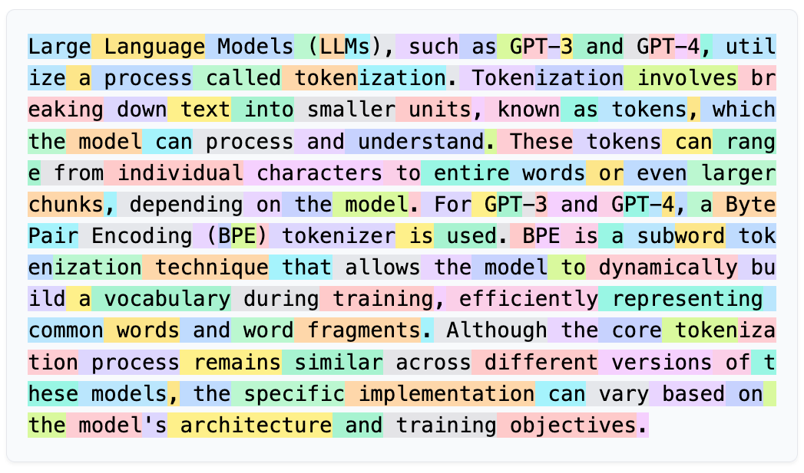
Tokenization splits text into individual units called tokens—usually words, but sometimes punctuation, numbers, or subwords. Every subsequent NLP step operates on tokens.
Why tokenization matters:
- “500mg” as one token vs. “500” + “mg” affects downstream analysis
- Abbreviations like “Dr.” shouldn’t be split at the period
- Medical terms like “COVID-19” should stay together
Tokenization and NLP methods: The choice of tokenization strategy depends on your downstream task. Classical NLP typically uses word-level tokenization. Modern LLMs use subword tokenization (BPE, WordPiece), which splits words into smaller pieces like “pre” + “process” + “ing”—this handles rare words better and creates a fixed vocabulary size. The tokenizer and model must match: you can’t use a word tokenizer with a model trained on subwords.
Sentence: "Dr. Smith prescribed 500mg ibuprofen."
Whitespace split: ["Dr.", "Smith", "prescribed", "500mg", "ibuprofen."]
↑ keeps punctuation attached
NLTK word_tokenize: ["Dr.", "Smith", "prescribed", "500mg", "ibuprofen", "."]
↑ handles abbreviations, splits final "."
spaCy tokenizer: ["Dr.", "Smith", "prescribed", "500", "mg", "ibuprofen", "."]
↑ splits numbers from unitsReference Card: Tokenization
| Category | Method | Purpose & Arguments | Typical Output |
|---|---|---|---|
| Basic | text.split() |
Splits on whitespace only. | list[str] |
| NLTK | nltk.word_tokenize(text) |
Tokenizes handling punctuation and abbreviations. | list[str] |
| NLTK | nltk.sent_tokenize(text) |
Splits text into sentences. | list[str] |
| NLTK | RegexpTokenizer(pattern) |
Custom tokenizer using regex pattern (e.g., r'\w+' for words only). |
list[str] via .tokenize(text) |
| spaCy | for token in doc |
Iterates tokens after doc = nlp(text). |
Token objects |
Code Snippet: Tokenization
import nltk
nltk.download('punkt_tab')
text = "Dr. Smith prescribed 500mg ibuprofen. Take twice daily."
# Naive split
print(text.split())
# ['Dr.', 'Smith', 'prescribed', '500mg', 'ibuprofen.', 'Take', 'twice', 'daily.']
# NLTK word tokenize
print(nltk.word_tokenize(text))
# ['Dr.', 'Smith', 'prescribed', '500mg', 'ibuprofen', '.', 'Take', 'twice', 'daily', '.']
# NLTK sentence tokenize
print(nltk.sent_tokenize(text))
# ['Dr. Smith prescribed 500mg ibuprofen.', 'Take twice daily.']Normalization
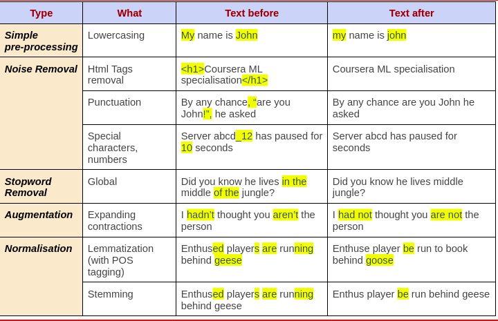
Normalization transforms tokens into a consistent form.
Lowercasing reduces vocabulary size by treating “Patient” and “patient” as the same word.
Caveat: Lowercasing can destroy useful information. “US” (United States) becomes “us” (pronoun). In clinical text, abbreviations often rely on case: “MS” could mean multiple sclerosis, mental status, or morphine sulfate.
Stopword removal filters out common words like “the”, “is”, “and” that appear frequently but carry little meaning for many tasks. A stopword list is a predefined set of these common words.
Caveat: Stopwords aren’t always useless. “No chest pain” loses critical meaning if you remove “no”. For clinical text, be careful with negation words.
Punctuation removal strips commas, periods, and other marks—unless they carry meaning (like hyphens in “COVID-19”).
Reference Card: Normalization
| Category | Method | Purpose & Arguments | Typical Output |
|---|---|---|---|
| Case | text.lower() |
Converts string to lowercase. | str |
| Punctuation | text.translate(str.maketrans('', '', string.punctuation)) |
Removes all punctuation characters. | str |
| Stopwords | stopwords.words('english') |
Returns NLTK’s English stopword list. | list[str] (179 words) |
Code Snippet: Normalization
import string
import nltk
from nltk.corpus import stopwords
nltk.download('punkt_tab')
nltk.download('stopwords')
text = "The Patient, age 45, presents WITH chest pain."
text = text.lower()
text = text.translate(str.maketrans('', '', string.punctuation))
tokens = nltk.word_tokenize(text)
stop_words = set(stopwords.words('english'))
tokens = [t for t in tokens if t not in stop_words]
print(tokens)
# ['patient', 'age', '45', 'presents', 'chest', 'pain']Stemming and Lemmatization
Both techniques reduce words to a common base form, helping group related words together.
Stemming chops off word endings using simple rules. It’s fast but crude—“studies” becomes “studi” (not a real word).
Lemmatization uses vocabulary and word structure analysis to find the actual dictionary form (the lemma). “studies” → “study”, “better” → “good”. More accurate but slower.
Word Stemmer Output Lemmatizer Output
───────────────────────────────────────────────────
"running" "run" "run"
"studies" "studi" "study"
"better" "better" "good" (with POS=adj)
"universities" "univers" "university"Reference Card: Stemming & Lemmatization
| Category | Method | Purpose & Arguments | Typical Output |
|---|---|---|---|
| Stemming | PorterStemmer().stem(word) |
Classic rule-based English stemmer. | str |
| Stemming | SnowballStemmer('english').stem(word) |
Improved Porter variant. | str |
| Lemmatization | WordNetLemmatizer().lemmatize(word, pos='v') |
Dictionary lookup. pos: ‘n’, ‘v’, ‘a’, ‘r’. |
str |
| Lemmatization | token.lemma_ |
spaCy attribute, automatic in pipeline. | str |
Code Snippet: Stemming vs Lemmatization
from nltk.stem import PorterStemmer, WordNetLemmatizer
import nltk
nltk.download('wordnet')
stemmer = PorterStemmer()
lemmatizer = WordNetLemmatizer()
words = ["running", "studies", "better", "caring"]
for word in words:
print(f"{word}: stem={stemmer.stem(word)}, lemma={lemmatizer.lemmatize(word, pos='v')}")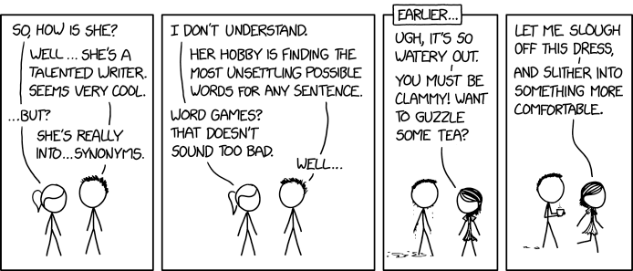
LIVE DEMO
Part-of-Speech Tagging
Part-of-speech (POS) tagging labels each token with its grammatical role: noun, verb, adjective, etc.
Concepts
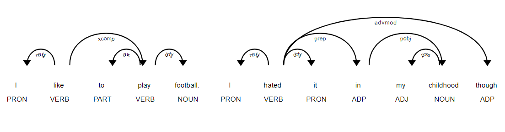
POS tagging enables:
- Better lemmatization — knowing “running” is a verb vs noun
- Information extraction — find all nouns to identify topics
- Syntax analysis — understand sentence structure
"The patient reported severe chest pain yesterday."
The → DT (determiner)
patient → NN (noun, singular)
reported → VBD (verb, past tense)
severe → JJ (adjective)
chest → NN (noun, singular)
pain → NN (noun, singular)Tags follow standardized sets. Penn Treebank tags (NLTK) are the traditional English standard. Universal Dependencies tags (spaCy) work across languages.
NLTK
Reference Card: NLTK POS Tagging
| Category | Method | Purpose & Arguments | Typical Output |
|---|---|---|---|
| Tag | nltk.pos_tag(tokens) |
Tags list of tokens with POS. | list[tuple[str, str]] |
| Help | nltk.help.upenn_tagset('NN') |
Explains a Penn Treebank tag. | Printed description |
Code Snippet: NLTK POS Tagging
import nltk
nltk.download('averaged_perceptron_tagger_eng')
text = "The patient reported severe chest pain."
tokens = nltk.word_tokenize(text)
tagged = nltk.pos_tag(tokens)
print(tagged)
# [('The', 'DT'), ('patient', 'NN'), ('reported', 'VBD'),
# ('severe', 'JJ'), ('chest', 'NN'), ('pain', 'NN'), ('.', '.')]
# Find all nouns
nouns = [word for word, tag in tagged if tag.startswith('NN')]
print(nouns) # ['patient', 'chest', 'pain']spaCy
Reference Card: spaCy POS Tagging
| Category | Method / Attribute | Purpose & Arguments | Typical Output |
|---|---|---|---|
| Coarse | token.pos_ |
Universal Dependencies POS tag. | str ("NOUN", "VERB") |
| Fine | token.tag_ |
Fine-grained Penn Treebank style tag. | str ("NN", "VBD") |
| Help | spacy.explain(tag) |
Explains any spaCy tag. | str |
Code Snippet: spaCy POS Tagging
import spacy
nlp = spacy.load("en_core_web_sm")
doc = nlp("The patient reported severe chest pain.")
for token in doc:
print(f"{token.text:12} {token.pos_:6} {token.tag_}")
# The DET DT
# patient NOUN NN
# reported VERB VBD
# severe ADJ JJ
# chest NOUN NN
# pain NOUN NN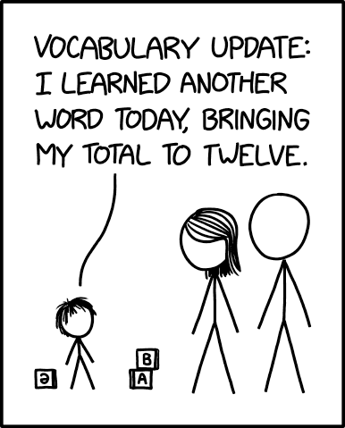
Named Entity Recognition
Named Entity Recognition (NER) identifies and classifies specific entities in text: people, organizations, locations, dates. For clinical text, specialized models can extract medications, dosages, diagnoses, and procedures.
Concepts
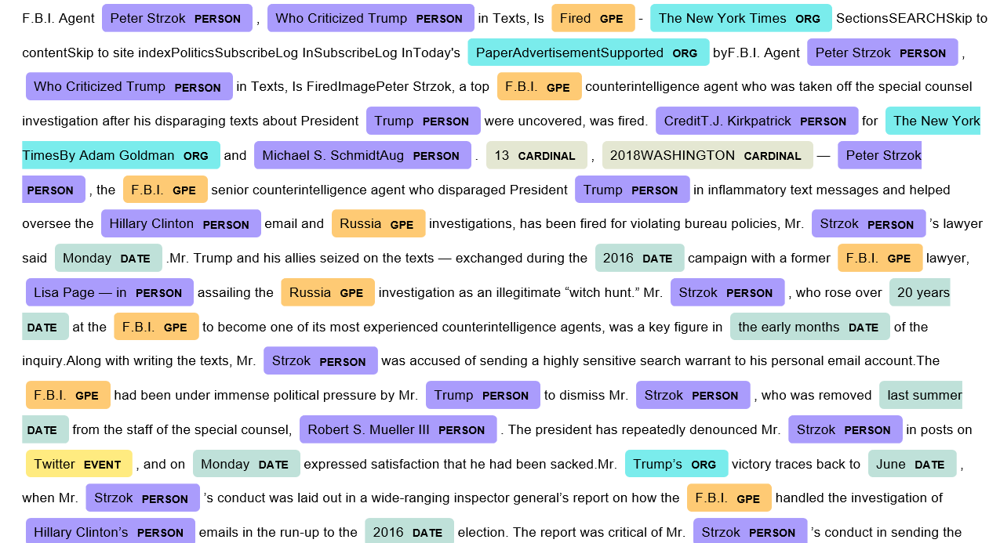
Example: “Dr. Smith at UCSF prescribed Metformin 500mg on January 15.”
| Text | Entity Type |
|---|---|
| Dr. Smith | PERSON |
| UCSF | ORG (organization) |
| Metformin | (needs medical NER model) |
| 500mg | QUANTITY |
| January 15 | DATE |
Standard NER entities: PERSON, ORG, GPE (location), DATE, TIME, MONEY, PERCENT
Clinical NER entities (specialized models): MEDICATION, DOSAGE, DIAGNOSIS, PROCEDURE, ANATOMY
NLTK
NLTK’s NER requires POS-tagged input and returns a tree structure.
Reference Card: NLTK NER
| Category | Method | Purpose & Arguments | Typical Output |
|---|---|---|---|
| Extract | nltk.ne_chunk(tagged) |
Extracts named entities from POS-tagged tokens. | nltk.Tree |
| Binary | nltk.ne_chunk(tagged, binary=True) |
Labels NE vs non-entity only. | nltk.Tree |
Code Snippet: NLTK NER
import nltk
nltk.download('maxent_ne_chunker_tab')
nltk.download('words')
text = "Dr. Smith at UCSF prescribed medication."
tokens = nltk.word_tokenize(text)
tagged = nltk.pos_tag(tokens)
entities = nltk.ne_chunk(tagged)
for chunk in entities:
if hasattr(chunk, 'label'):
print(f"{' '.join(c[0] for c in chunk)}: {chunk.label()}")
# UCSF: ORGANIZATIONspaCy
Reference Card: spaCy NER
| Category | Method / Attribute | Purpose & Arguments | Typical Output |
|---|---|---|---|
| Access | doc.ents |
All named entities in document. | tuple[Span] |
| Text | ent.text |
The entity’s text content. | str |
| Type | ent.label_ |
Entity classification. | str ("PERSON", "ORG") |
| Position | ent.start, ent.end |
Token indices of entity span. | int |
Code Snippet: spaCy NER
import spacy
nlp = spacy.load("en_core_web_sm")
doc = nlp("Dr. Smith at UCSF prescribed medication on January 15.")
for ent in doc.ents:
print(f"{ent.text}: {ent.label_}")
# Dr. Smith: PERSON
# UCSF: ORG
# January 15: DATEText Extraction
Beyond NER, we often need to extract specific patterns from text—vitals, dosages, dates, and other structured information. Regex is the workhorse for syntactic patterns; for more complex extraction, consider rule-based systems (spaCy’s Matcher) or template filling.
Regex Patterns
Regular expressions (regex, import re) are pattern-matching tools for extracting text that follows predictable formats. Use regex when:
- NER doesn’t cover your pattern — vitals like “120/80” or dosages like “500mg” aren’t standard NER types
- You need exact format control — dates in “MM/DD/YYYY” vs “Month DD, YYYY” vs “DD-Mon-YY”
- The pattern is syntactic, not semantic — phone numbers, IDs, lab values follow structural rules
- You’re building a preprocessing pipeline — clean or normalize text before further analysis
NER identifies what something means (this is a person, this is a date). Regex extracts what something looks like (three digits, slash, three digits).
Pattern Matches Example
────────────────────────────────────────────────────────
\d digit "5" in "500mg"
\d+ one or more digits "500" in "500mg"
\w+ word characters "patient" in "patient:"
[A-Z]+ uppercase letters "BP" in "BP: 120/80"
\s whitespace spaces, tabs, newlines
(...) capture group extract matched portion
| OR "mg|ml|mcg"
Clinical patterns:
• Vitals: \d{2,3}/\d{2,3} → "120/80"
• Dosage: \d+\s?(mg|ml|mcg) → "500 mg", "10ml"
• Date: \d{1,2}/\d{1,2}/\d{4} → "01/15/2025"Reference Card: Python re Module
| Category | Method | Purpose & Arguments | Typical Output |
|---|---|---|---|
| Search | re.search(pattern, text) |
Finds first match in text. | Match or None |
| Find All | re.findall(pattern, text) |
Finds all non-overlapping matches. | list[str] |
| Replace | re.sub(pattern, repl, text) |
Replaces matches with repl string. |
str |
| Extract | match.group() |
Returns the matched text. | str |
| Groups | match.groups() |
Returns all captured groups. | tuple[str] |
Code Snippet: Regex in the re Module
import re
note = "BP 120/80, Metformin 500mg, Lab 01/15/2025"
bp = re.findall(r'\d{2,3}/\d{2,3}', note) # ['120/80']
meds = re.findall(r'(\w+)\s+(\d+)(mg|ml)', note) # [('Metformin', '500', 'mg')]
cleaned = re.sub(r'\d{2}/\d{2}/\d{4}', '[DATE]', note) # redact datesRegex Across NLP Tools
Regex patterns appear throughout the NLP toolkit—not just in the re module. Learning regex syntax pays off because you’ll reuse it in many contexts.
# TOKENIZATION: RegexpTokenizer uses regex to define what counts as a token
from nltk.tokenize import RegexpTokenizer
tokenizer = RegexpTokenizer(r'\w+') # words only, no punctuation
tokenizer.tokenize("Hello, world!") # ['Hello', 'world']
# PANDAS: .str methods accept regex for text columns
import pandas as pd
df = pd.DataFrame({'notes': ['BP 120/80', 'BP 130/85']})
df['systolic'] = df['notes'].str.extract(r'(\d+)/\d+') # extract first number
# SPACY MATCHER: pattern-based matching (not regex, but similar concept)
# from spacy.matcher import Matcher
# matcher.add("BP_PATTERN", [[{"SHAPE": "ddd"}, {"TEXT": "/"}, {"SHAPE": "dd"}]])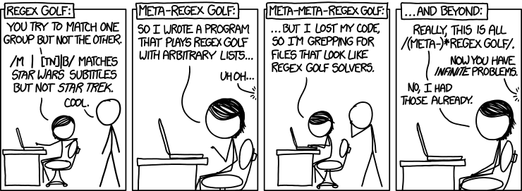
LIVE DEMO
Text Representation
To use text in machine learning, we need numerical representations. These classical approaches convert documents into vectors (lists of numbers).
Bag of Words
Bag of Words (BoW) counts how many times each word appears, ignoring order. The result is a document-term matrix where each row is a document and each column is a word from the vocabulary (all unique words across documents).
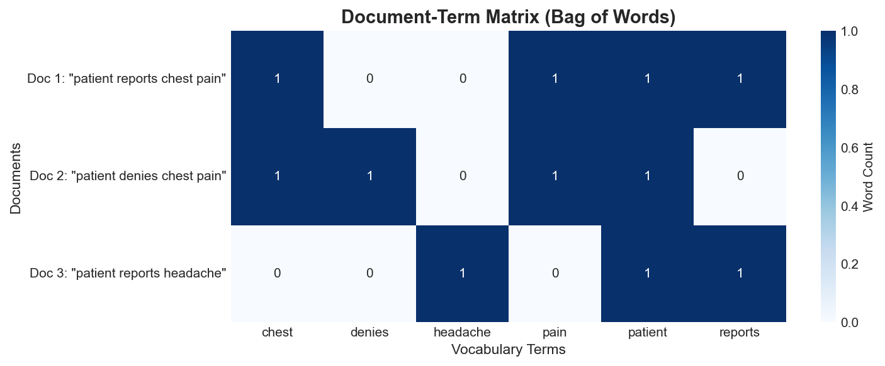
Documents:
1. "patient reports chest pain"
2. "patient denies chest pain"
3. "patient reports headache"
Vocabulary: [chest, denies, headache, pain, patient, reports]
Document-Term Matrix:
chest denies headache pain patient reports
Doc 1 1 0 0 1 1 1
Doc 2 1 1 0 1 1 0
Doc 3 0 0 1 0 1 1Limitations:
- Ignores word order (“patient reports pain” = “pain reports patient”)
- Creates sparse matrices (most values are 0)
- Common words dominate the counts
Reference Card: CountVectorizer
| Category | Method | Purpose & Arguments | Typical Output |
|---|---|---|---|
| Create | CountVectorizer(max_features=N, stop_words='english') |
Initializes vectorizer. ngram_range=(1,1) for unigrams. |
CountVectorizer |
| Fit | .fit_transform(docs) |
Learns vocabulary and transforms documents to counts. | Sparse matrix |
| Inspect | .get_feature_names_out() |
Returns learned vocabulary. | ndarray[str] |
| Convert | .toarray() |
Converts sparse matrix to dense array. | ndarray |
Code Snippet: Bag of Words
from sklearn.feature_extraction.text import CountVectorizer
docs = [
"patient reports chest pain",
"patient denies chest pain",
"patient reports headache"
]
vectorizer = CountVectorizer()
X = vectorizer.fit_transform(docs)
print(vectorizer.get_feature_names_out())
# ['chest' 'denies' 'headache' 'pain' 'patient' 'reports']
print(X.toarray())
# [[1 0 0 1 1 1]
# [1 1 0 1 1 0]
# [0 0 1 0 1 1]]TF-IDF
TF-IDF (Term Frequency–Inverse Document Frequency) improves on raw counts by weighting words based on how distinctive they are. Words that appear in every document get downweighted; rare, specific terms get upweighted.
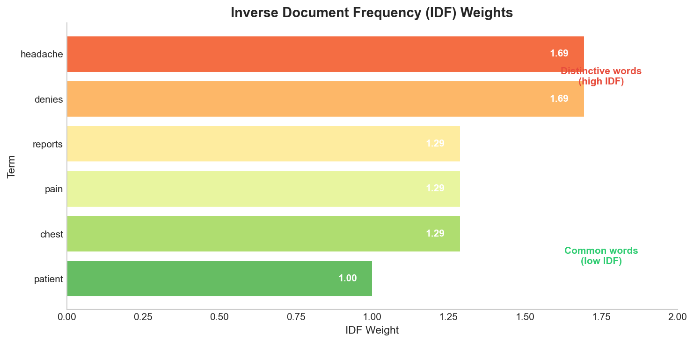
\[\text{TF-IDF}(word, doc) = \text{TF}(word, doc) \times \text{IDF}(word)\]
- TF (Term Frequency) — how often the word appears in this document
- IDF (Inverse Document Frequency) — how rare the word is across all documents: \(\log(\text{total docs} / \text{docs containing word})\)
Note: scikit-learn’s
TfidfVectorizeruses a smoothed IDF formula by default: \(\log((n+1)/(df+1)) + 1\), where \(n\) is the total number of documents and \(df\) is the document frequency. This prevents division by zero and slightly different values than the standard formula.
Example: “diabetes” appears in 10 of 1000 documents → high IDF (distinctive). “patient” appears in 900 of 1000 → low IDF (common).
Reference Card: TfidfVectorizer
| Category | Method | Purpose & Arguments | Typical Output |
|---|---|---|---|
| Create | TfidfVectorizer(max_df=0.9, min_df=2) |
Tokenizes + applies TF-IDF. max_df/min_df filter by doc frequency. |
TfidfVectorizer |
| Fit | .fit_transform(docs) |
Learns vocabulary and transforms to TF-IDF weights. | Sparse matrix |
| Transform | .transform(new_docs) |
Transforms new text using learned vocabulary (no refitting). | Sparse matrix |
| Inspect | .idf_ |
Learned IDF weights for each term. | ndarray[float] |
Code Snippet: TF-IDF
from sklearn.feature_extraction.text import TfidfVectorizer
docs = [
"patient reports chest pain",
"patient denies chest pain",
"patient reports headache"
]
vectorizer = TfidfVectorizer()
X = vectorizer.fit_transform(docs)
for word, idf in zip(vectorizer.get_feature_names_out(), vectorizer.idf_):
print(f"{word}: IDF = {idf:.2f}")
# patient: IDF = 1.00 ← appears in all docs, lowest IDF
# denies: IDF = 1.69 ← appears in only 1 doc, high IDFN-grams
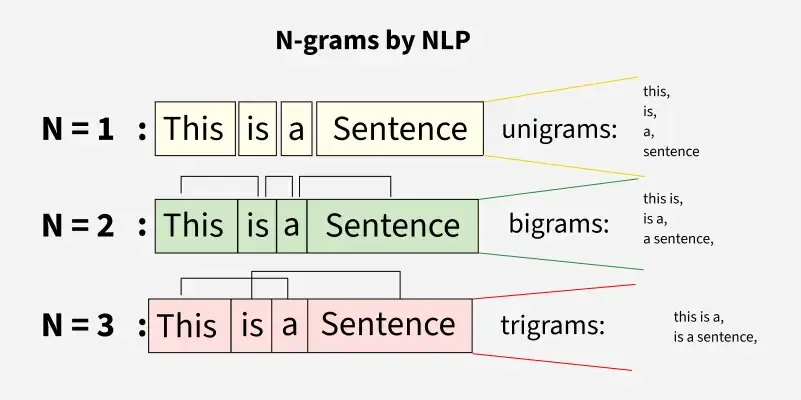
Single words (unigrams) lose context. N-grams capture sequences of N consecutive words.
- Bigrams (n=2): word pairs — “chest pain”, “denies chest”
- Trigrams (n=3): word triples — “patient denies chest”
Why n-grams matter for clinical text:
- “chest pain” is meaningful as a unit
- “denies chest pain” captures negation context
- “no chest pain” vs “chest pain” mean opposite things
Reference Card: N-grams
| Category | Method | Purpose & Arguments | Example Output |
|---|---|---|---|
| Unigrams | ngram_range=(1, 1) |
Single words only (default). | ['chest', 'pain'] |
| + Bigrams | ngram_range=(1, 2) |
Words and word pairs. | ['chest', 'pain', 'chest pain'] |
| + Trigrams | ngram_range=(1, 3) |
Through 3-word sequences. | ['chest', 'chest pain', 'denies chest pain'] |
Use with CountVectorizer or TfidfVectorizer.
Code Snippet: N-grams
from sklearn.feature_extraction.text import CountVectorizer
docs = ["patient denies chest pain", "patient reports chest pain"]
vectorizer = CountVectorizer(ngram_range=(1, 2))
X = vectorizer.fit_transform(docs)
print(vectorizer.get_feature_names_out())
# ['chest', 'chest pain', 'denies', 'denies chest', 'pain',
# 'patient', 'patient denies', 'patient reports', 'reports', 'reports chest']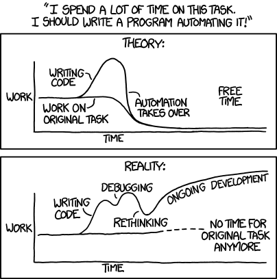
Word Vectors
The representations above treat each word independently—“diabetes” and “hypertension” are just as different as “diabetes” and “pizza.” Word vectors (embeddings) capture semantic similarity: related words have similar vectors.
spaCy’s medium and large models (en_core_web_md, en_core_web_lg) include pre-computed word vectors. We’ll cover how embeddings work in Lecture 07.
Code Snippet: Word Vectors
import spacy
# Note: en_core_web_sm has no vectors; use _md or _lg for word vectors
nlp = spacy.load("en_core_web_md") # medium model has vectors
doc = nlp("diabetes hypertension")
print(doc[0].vector.shape) # (300,) - 300-dimensional vector
print(doc[0].similarity(doc[1])) # ~0.5 - related medical termsFor classical NLP, TF-IDF is your go-to representation: interpretable, effective, and doesn’t require special models.
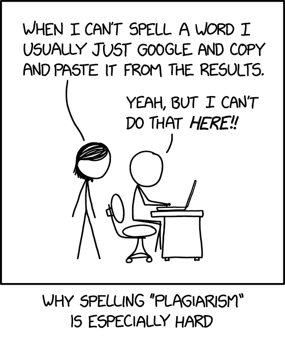
Document Similarity
With text represented as vectors, we can measure how similar documents are. This enables search, clustering, and recommendation systems. Cosine similarity is the standard choice for text; alternatives include Jaccard similarity (for sets of words) and Euclidean distance (sensitive to document length).
Cosine Similarity
Cosine similarity measures the angle between two vectors rather than their distance. This makes it robust to document length—a long document and a short document about the same topic will have high similarity.
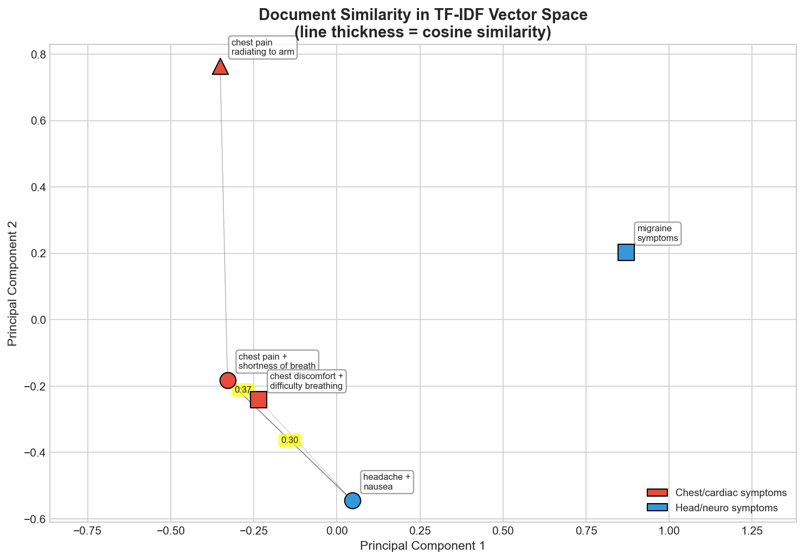
\[\cos(\theta) = \frac{A \cdot B}{\|A\| \times \|B\|}\]
- Range: 0 to 1 for TF-IDF vectors
- 1.0 = identical direction (very similar)
- 0.0 = perpendicular (no shared words)
Reference Card: Document Similarity
| Category | Method | Purpose & Arguments | Typical Output |
|---|---|---|---|
| Pairwise | cosine_similarity(X) |
Similarity between all row pairs in X. | ndarray (n×n) |
| Compare | cosine_similarity(X, Y) |
Similarity between rows of X and Y. | ndarray |
| Distance | spatial.distance.cosine(u, v) |
Cosine distance (1 - similarity). | float |
| Jaccard | jaccard_score(set1, set2) |
Intersection/union of word sets. | float (0-1) |
Code Snippet: Document Similarity
from sklearn.feature_extraction.text import TfidfVectorizer
from sklearn.metrics.pairwise import cosine_similarity
docs = [
"patient presents with chest pain and shortness of breath",
"patient reports chest discomfort and difficulty breathing",
"patient complains of headache and nausea"
]
vectorizer = TfidfVectorizer()
X = vectorizer.fit_transform(docs)
similarities = cosine_similarity(X)
print(similarities)
# [[1. 0.35 0.11]
# [0.35 1. 0.11]
# [0.11 0.11 1. ]]
# Docs 0 and 1 are most similar (both about chest/breathing)
# Jaccard: compare word sets (ignores frequency)
words0 = set(docs[0].lower().split())
words1 = set(docs[1].lower().split())
jaccard = len(words0 & words1) / len(words0 | words1)
print(f"Jaccard: {jaccard:.2f}") # 0.31Specialized Tools
General NLP tools work well for common text, but clinical language requires specialized models.
| Tool | Focus | Access |
|---|---|---|
| scispaCy | Biomedical NER | pip install scispacy |
| MedSpaCy | Negation detection, clinical pipelines | pip install medspacy |
| cTAKES | Full clinical NLP (Java) | Apache, open source |
| MetaMap | UMLS concept extraction | NLM, requires license |
UMLS (Unified Medical Language System) is a biomedical vocabulary database from the National Library of Medicine. It maps between coding systems (ICD, SNOMED, RxNorm) and provides standardized concept identifiers. Tools like MetaMap and QuickUMLS link free-text mentions to UMLS concepts.
Challenges
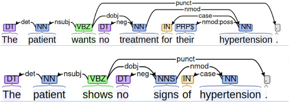
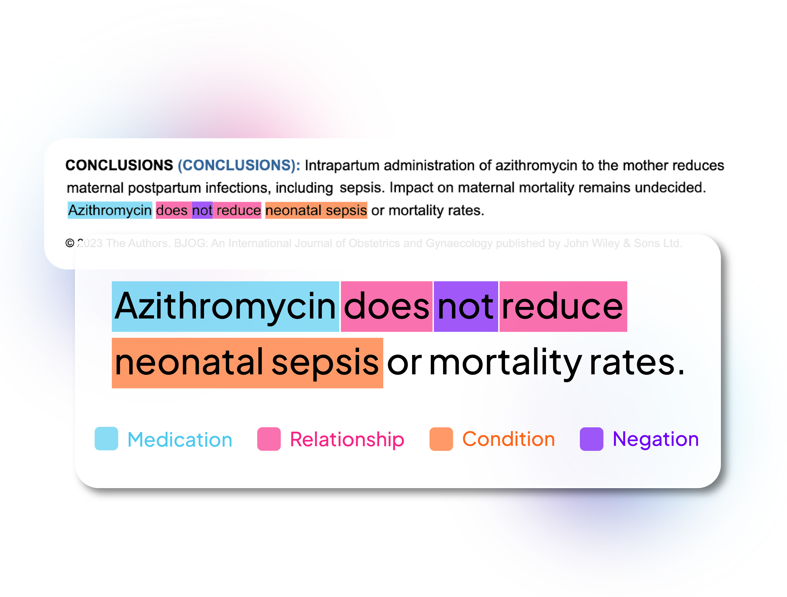
General NLP tools struggle with clinical text:
Abbreviations — “pt c/o SOB” = “patient complains of shortness of breath”. Same abbreviation, different meanings: “MS” = multiple sclerosis OR mental status OR morphine sulfate.
Negation — “Patient denies chest pain” means chest pain is ABSENT. Simple keyword extraction misses this. Basic negation detection looks for negation words (“no”, “denies”, “without”) within a few words of the finding: re.search(r'\b(no|denies?|without)\s+\w+\s+chest\s+pain', text, re.I) would catch this pattern.
Uncertainty — “possible pneumonia” ≠ “confirmed pneumonia”. “rule out MI” = suspicion, not diagnosis.
Temporality — “History of diabetes” (past) vs “Patient has diabetes” (current) vs “Risk of diabetes” (future).
Variations — “hypertention”, “htn”, “HTN”, “high blood pressure” all mean the same thing.
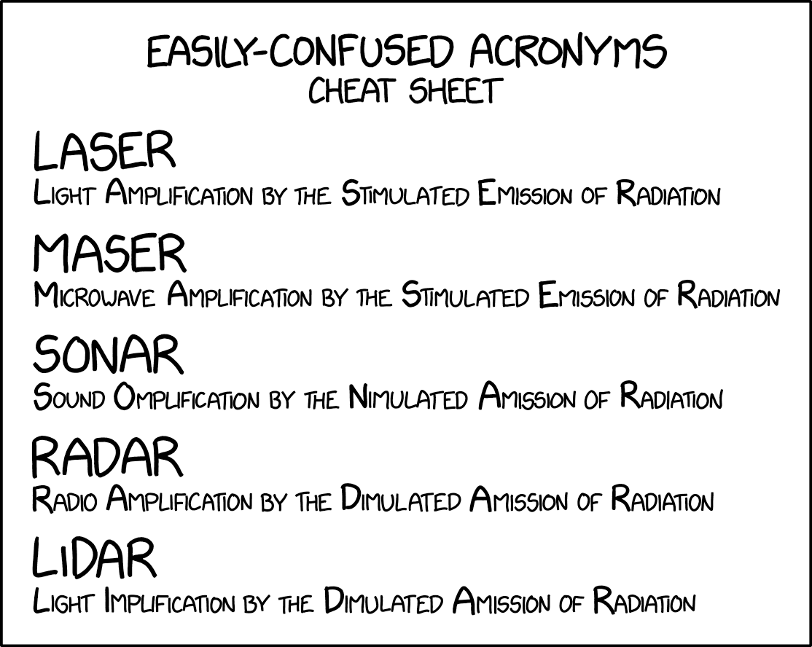
Pipelines
Putting it all together: combine preprocessing, analysis, and extraction into reusable pipelines.
NLTK Pipeline
NLTK requires manual assembly—each step is explicit and configurable.
Code Snippet: NLTK Pipeline
import nltk
import string
import re
from nltk.corpus import stopwords
from nltk.stem import WordNetLemmatizer
def nltk_pipeline(text):
# Step 1: Tokenize
tokens = nltk.word_tokenize(text.lower())
# Step 2: Remove punctuation and stopwords
stop_words = set(stopwords.words('english')) - {'no', 'not'} # keep negations
tokens = [t for t in tokens if t not in string.punctuation and t not in stop_words]
# Step 3: Lemmatize
lemmatizer = WordNetLemmatizer()
tokens = [lemmatizer.lemmatize(t) for t in tokens]
# Step 4: POS tag
tagged = nltk.pos_tag(tokens)
# Step 5: Extract named entities
entities = nltk.ne_chunk(tagged)
# Step 6: Extract patterns with regex
bp = re.findall(r'\d{2,3}/\d{2,3}', text)
return {
'tokens': tokens,
'pos_tags': tagged,
'nouns': [word for word, tag in tagged if tag.startswith('NN')],
'entities': entities,
'blood_pressure': bp
}
note = "Patient John Smith, age 45, presents with BP 140/90 and chest pain."
result = nltk_pipeline(note)
print(f"Tokens: {result['tokens']}")
print(f"Nouns: {result['nouns']}")
print(f"BP: {result['blood_pressure']}")
# Tokens: ['patient', 'john', 'smith', 'age', '45', 'present', 'bp', '140/90', 'chest', 'pain']
# Nouns: ['patient', 'john', 'smith', 'age', 'bp', 'chest', 'pain']
# BP: ['140/90']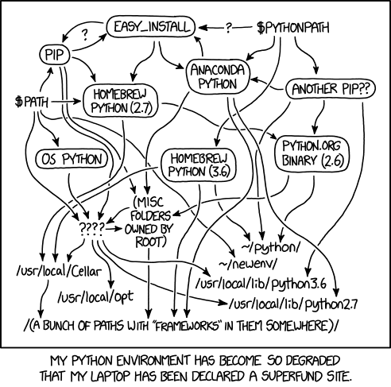
spaCy Pipeline
spaCy’s pipeline is integrated—one call processes everything.
Code Snippet: spaCy Pipeline
import spacy
import re
def spacy_pipeline(text):
nlp = spacy.load("en_core_web_sm")
doc = nlp(text)
# All analysis available on doc object
return {
'tokens': [token.text for token in doc],
'lemmas': [token.lemma_ for token in doc if not token.is_punct],
'nouns': [token.lemma_ for token in doc if token.pos_ == "NOUN"],
'entities': [(ent.text, ent.label_) for ent in doc.ents],
'blood_pressure': re.findall(r'\d{2,3}/\d{2,3}', text)
}
note = "Dr. Martinez at UCSF prescribed Metformin 500mg on 01/15/2025. Patient reports improved glucose control."
result = spacy_pipeline(note)
print(f"Nouns: {result['nouns']}")
print(f"Entities: {result['entities']}")
print(f"BP: {result['blood_pressure']}")
# Nouns: ['Dr.', 'UCSF', 'Metformin', 'glucose', 'control']
# Entities: [('Dr. Martinez', 'PERSON'), ('UCSF', 'ORG'), ('01/15/2025', 'DATE')]
# BP: []Reference Card: spaCy Pipeline
| Category | Method / Attribute | Purpose & Arguments | Typical Output |
|---|---|---|---|
| Setup | spacy.load("en_core_web_sm") |
Loads English pipeline model. | Language (nlp) |
| Process | nlp(text) |
Runs full pipeline in one call. | Doc object |
| Token | token.lemma_ |
Dictionary base form. | str |
| Token | token.pos_ |
Part-of-speech tag. | str ("NOUN", "VERB") |
| Token | token.is_stop, token.is_punct |
Boolean filters. | bool |
| Doc | doc.ents |
Named entities found. | tuple[Span] |
Comparing the Approaches
| Aspect | NLTK Pipeline | spaCy Pipeline |
|---|---|---|
| Assembly | Manual, step-by-step | Automatic, one call |
| Customization | Full control at each step | Configure via nlp.disable() |
| Stopwords | Explicit filtering | token.is_stop attribute |
| NER quality | Basic | Better out-of-box |
| Speed | Slower | Faster |
LIVE DEMO